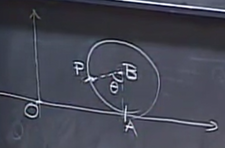
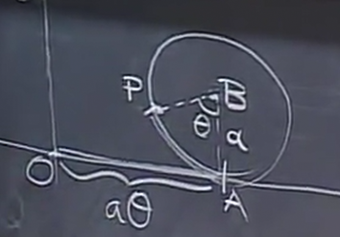
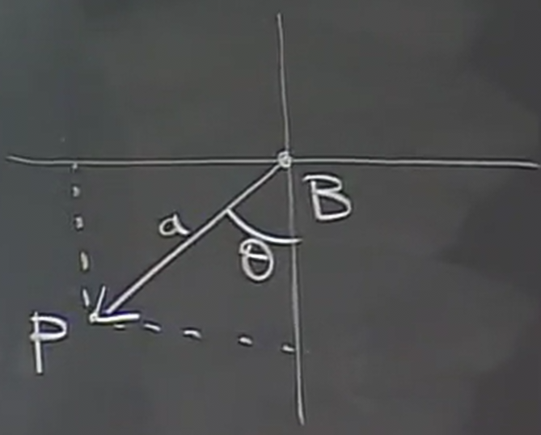

Lines and Planes
Table of Contents
1. Equations of Planes
An equation of the form:
\[ ax+by+cz=d \]
defines a plane.
1.1. Given Normal Vector
This can be seen by considering a normal vector. We want to find the equation that defines the plane the normal vector is perpendicular to. In order to do this, we want to find some condition on a point \((x,y,z)\) that fulfills this requirement. Recall that this is equivalent to the dot product; in other words, given a normal vector \(\langle a,b,c \rangle\),
\begin{aligned} \langle a,b,c \rangle \cdot \langle x,y,z \rangle &= 0 \\ ax+by+cz &= 0 \end{aligned}However, realize that by directly using \((x,y,z)\) as a vector in our dot product, we are implicitly defining this plane to go through the origin.
1.2. Given Normal Vector and Point
More generally, we can shift this plane around by introducing an arbtitrary point \(P_0\), \((x_0,y_0,z_0)\), that we want this plane to go through. Now, realize that our vector is no longer just \(\langle x,y,z \rangle\), but \(\langle x-x_0,y-y_0,z-z_0 \rangle\). Thus, we have:
\begin{aligned} \langle a,b,c \rangle \cdot \langle x-x_0,y-y_0,z-z_0 \rangle &= 0 \\ ax+by+cz - (ax_0 + by_0 +cz_0) &= 0 \\ ax+by+cz &= ax_0 + by_0 +cz_0 \\ ax+by+cz &= d \end{aligned}Realize that \(a\), \(b\), and \(c\) correspond exactly to our normal vector, and \(d\) is 0 if the plane goes through the origin, and \(ax_0 + by_0 + cz_0\) otherwise.
1.3. Finding the Equation
Therefore, an equation of a plane can be quickly determined if you have \(P_0\) and a normal vector \(\langle a,b,c \rangle\). Firstly, the plane perpendicular to this vector is \(ax+by+cz=d\). Then, to find \(d\), all you need to do is plug in \(P_0\), as the resulting number must make the equation true.
If you are not given the normal vector, it is also sufficient if we are given two vectors that are contained in the plane. This is because the cross product of those two vectors would give us a vector normal to the plane defined by those two vectors.
2. 3x3 Systems as the Intersection of Planes
A 3x3 linear system can be seen as a set of 3 equations of planes. Then, the solution that satisfies this linear system is simply the point that is at the intersection of all three of these planes.
However, there are edge cases that we need to consider. With 2 equations out of the 3 of the planes, we get an intersection of a line between them. Critically, there are cases where we can get no solutions, infinite solutions on a line, or infinite solutions on a plane.
- no solutions if the third plane is parallel to one of the other planes, i.e doesn't intersect at any point that the other two planes simultaneously intersect on
- infinite solutions on a line if the line the first two planes intersect is contained within the third plane
- infinite solutions on a plane if all three planes are actually the same plane
Recall that to solve \(AX=B\), we take the inverse \(A^{-1}\) to get \(X=A^{-1}B\), where \(A^{-1} = \frac{1}{\det(A)} \text{ adj}(A)\). These special cases correspond to the moment when \(\det(A)=0\). In these scenarios, we would be unable to invert \(A\) in order to find any single solution.
2.1. Homogenous Systems
Homogenous systems are linear systems where \(AX=0\). Realize that there's always an obvious solution to this system, namely \((0,0,0)\) (the so-called trivial solution). If \(\det(A)\neq0\), then this is the unique solution.
Notice that if you interpret \(A\) as the coefficients of the equation of a plane, these vectors are simply the three normal vectors to the planes. Thus, if \(\det(A)=0\) means that these three normal vectors are coplanar (the parallelepiped formed by them have volume 0). Therefore, there are infinite solutions in this case (either in a line or a plane).
2.2. General Systems
For general systems where \(AX=B\), this is simply a homogenous system but shifted from the origin. Similarly, then, if \(\det(A)\neq0\), the unique solution is given by \(X=A^{-1}B\); otherwise if \(\det(A)=0\), then there are either infinitely many solutions or no solutions.
3. Equations of Lines
We have seen that a line is formed from the intersection of two planes. Therefore, it is possible to define a line as the intersection between two equations of planes.
However, this isn't particularly convenient. Another way of thinking about this is by considering the trajectory of a moving point, in other words, parametric equations.
3.1. Given Two Points
A line can be defined by two points in space, say \(Q_0\) and \(Q_1\). We can define a parametric equation with time variable \(t\), where \(Q(t)\) is our moving point which we shall say moves at constant speed on the line. This speed will be chosen such that at \(Q(0)=Q_0\) and \(Q(1)=Q_1\).
The question now is, how do we find the position of the point at any time \(t\)? Realize that the vector \(\vec{Q_0Q(t)}\) is proportional to \(\vec{Q_0Q_1}\). In other words, since it takes one unit of time to move from \(Q_0\) to \(Q_1\), we can say that:
\[ \vec{Q_0Q(t)} = t\vec{Q_0Q_1} \]
Now, say that the coordinates of \(Q(t)\) are \(x(t),y(t),z(t)\), the coordinates of \(Q_0\) are \(a_0,b_0,c_0\), and the coordinates of \(Q_1\) are \(a_1,b_1,c_1\). Therefore, we can say that:
\begin{aligned} x(t) - a_0 &= (a_1-a_0)t \\ y(t) - b_0 &= (b_1-b_0)t \\ z(t) - c_0 &= (c_1-c_0)t \end{aligned}Isolating, we get
\begin{aligned} x(t) &= a_0+(a_1-a_0)t \\ y(t) &= b_0+(b_1-b_0)t \\ z(t) &= c_0+(c_1-c_0)t \end{aligned}3.2. Intersection with a Plane
We can use our parametric equations to consider the question: given a plane, does the line intersect with the plane, and if so, where?
An important insight is that the equation of a plane divides the space into two parts. A point at \(ax+by+cz
To find when the line intersects the plane with our parametric equations, we can simply plug our equations for \(x(t),y(t),z(t)\) in for \(x,y,z\) in our plane equation. We can then isolate \(t\) to get the time the point intersects the plane, and then plug that back into \(Q(t)\) to find the point at which it intersects the plane.
There are also cases when we plug our equations for \(x(t),y(t),z(t)\), we get a contradiction (e.g. \(13=7\)). This tells us that there are no solutions, in other words, the line is parallel to the plane and will never intersect. Similarly, if we get something that is always true, there are infinite solutions; in other words, the line is contained within the plane.
4. General Parametric Equations
Now, we shall explore parametric equations more generally. A parametric equation is a function that describes some characteristic, such as the coordinates of a point, using one or more independent variables, known as parameters, such as time \(t\) or angle \(\theta\).
4.1. Cycloid
Consider a cycloid function, which is the trajectory when you consider a fixed point on a wheel as it rolls forward, like so:

In particular, can we find the position of this point, \(x(\theta),y(\theta)\), where \(\theta\) is the angle by which the wheel has rotated? We use \(\theta\) here instead of \(t\) because time is not important: the thing that is changing here is the rotation of the wheel.
Now, consider the vector \(\vec{OP}\), where \(O\) is the origin and \(P\) is the point on the wheel after it has rotated an angle \(\theta\):

Now, we can express this vector as the sum of some other vectors:
\[ \vec{OP} = \vec{OA} + \vec{AB} + \vec{BP} \]
Now, let's call the radius of the wheel \(a\). As the ball moves without slipping, the distance it moves on the ground should be the same as the arc length of the wheel that has rolled past, which is \(a\theta\):

Therefore, we now know that:
\begin{aligned} \vec{OA} &= \langle a\theta,0 \rangle \\ \vec{AB} &= \langle 0,a \rangle \end{aligned}Now, consider \(\vec{BP}\):

Using trigonometry, we can see that the components of \(\vec{BP}\) are:
\[ \vec{BP} = \langle -a\sin\theta, -a\cos\theta \rangle \]
Considering all of this, we can now say that:
\[ \vec{OP} = \langle a\theta - a\sin\theta, a-a\cos\theta \rangle \]
Therefore, our parametric equations are:
\begin{aligned} x(\theta) &= a\theta - a\sin\theta \\ y(\theta) &= a-a\cos\theta \end{aligned}